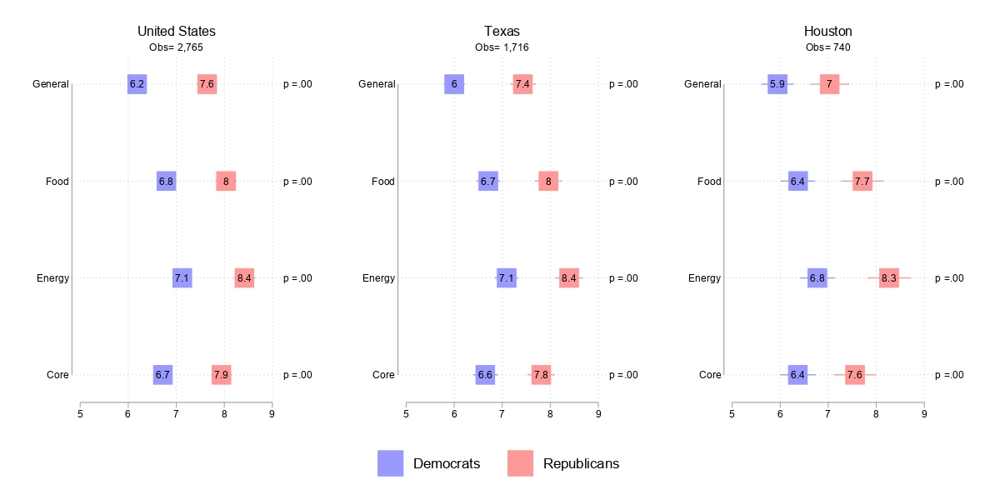

Download
Abstract
Affective polarization can impact policy evaluations, as individuals who experience intense negative emotions towards opposition party elements often view issues through a partisan lens and emotional biases, leading to diverging policy positions. We examine how partisan biases affect inflation expectations, a critical economic indicator in monetary policymaking. Using data from a choice experiment (CE) embedded in a survey of a representative sample of US residents conducted between August 11 and 29, 2022, we find that political polarization plays a significant role in shaping public inflation expectations even after controlling for policies affecting macroeconomic performance. Republicans are going to have higher inflation expectations when Democrats are in office regardless of their policies, and \textit{vice versa}. This study allows a better understanding of the interactions between partisan perceptions and economic expectations.
Figure X: Figure caption

Citation
Author. Year. “Title.” Journal Volume (Issue): First page–Last page. https://doi.org/paper_doi .
@article{AAYY,
author = {Author},
doi = {paper_doi},
journal = {Journal},
number = {Issue},
pages = {XXX--YYY},
title ={Title},
volume = {Volume},
year = {Year}}
Related material
- Presentation slides
- Dissertation title – PhD dissertation on which this paper is based.
- Column title – Nontechnical column describing the paper.